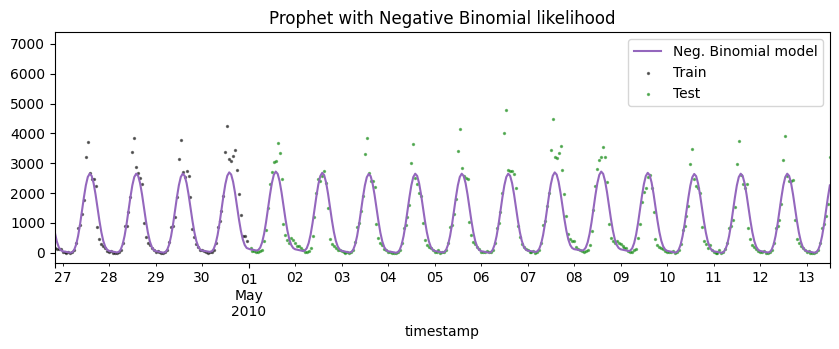

Forecasting count data
Many timeseries are composed of counts, which are non-negative integers. For example, the number of cars that pass through a toll booth in a given hour, the number of people who visit a website in a given day, or the number of sales of a product. The original Prophet model struggles to handle this type of data, as it assumes that the data is continuous and normally distributed. In this tutorial, we will show you how to use the prophetverse library to model count data, with a prophet-like model that uses Negative Binomial likelihood.
# Disable warnings
import warnings
warnings.simplefilter(action="ignore")
import matplotlib.pyplot as plt
import numpy as np
import pandas as pd
from numpyro import distributions as dist
from sktime.forecasting.compose import ForecastingPipeline
from sktime.transformations.series.fourier import FourierFeatures
from prophetverse.datasets.loaders import load_pedestrian_count
Import dataset
We use a dataset Melbourne Pedestrian Counts from forecastingdata, which contains the hourly pedestrian counts in Melbourne, Australia, from a set of sensors located in different parts of the city.
y = load_pedestrian_count()
# We take only one time series for simplicity
y = y.loc["T2"]
split_index = 24 * 365
y_train, y_test = y.iloc[:split_index], y.iloc[split_index + 1 : split_index * 2 + 1]
Let's plot a section of the time series to see how it looks like:
display(y_train.head())
y_train.iloc[: 24 * 21].plot(figsize=(10, 3), marker="o", color="black", legend=True)
plt.show()
Output: [3]
| pedestrian_count | |
|---|---|
| timestamp | |
| 2009-05-01 00:00 | 52.0 |
| 2009-05-01 01:00 | 34.0 |
| 2009-05-01 02:00 | 19.0 |
| 2009-05-01 03:00 | 14.0 |
| 2009-05-01 04:00 | 15.0 |

The full dataset is actually large, and plotting it all at once does not help a lot. Either way, let's plot the full dataset to see how it looks like:
ax = y_train["pedestrian_count"].rename("Train").plot(figsize=(20, 7))
y_test["pedestrian_count"].rename("Test").plot(ax=ax)
ax.legend()
plt.show()
Output: [4]
Fitting models
The series has some clear patterns: a daily seasonality, a weekly seasonality, and a yearly seasonality. It also has many zeros, and a model assuming normal distributed observations would not be able to capture this.
First, let's fit and forecast with the standard prophet, then see how the negative binomial model performs.
Prophet with normal likelihood
In this case, we will see how the model will output non-sensical negative values. The probabilistic intervals, mainly, will output values much lower than the support of the timeseries.
from prophetverse.effects.fourier import LinearFourierSeasonality
from prophetverse.effects.trend import FlatTrend
from prophetverse.engine import MAPInferenceEngine
from prophetverse.sktime import Prophetverse
from prophetverse.utils.regex import no_input_columns
# Here we set the prior for the seasonality effect
# And the coefficients for it
exogenous_effects = [
(
"seasonality",
LinearFourierSeasonality(
sp_list=[24, 24 * 7, 24 * 365.5],
fourier_terms_list=[2, 2, 10],
freq="H",
prior_scale=0.5,
effect_mode="multiplicative",
),
no_input_columns,
),
]
model = Prophetverse(
trend=FlatTrend(),
exogenous_effects=exogenous_effects,
inference_engine=MAPInferenceEngine(),
)
model.fit(y=y_train)
Output: [5]
Prophetverse(exogenous_effects=[('seasonality',
LinearFourierSeasonality(effect_mode='multiplicative',
fourier_terms_list=[2,
2,
10],
freq='H',
prior_scale=0.5,
sp_list=[24, 168,
8772.0]),
'^$')],
inference_engine=MAPInferenceEngine(), trend=FlatTrend())Please rerun this cell to show the HTML repr or trust the notebook.Prophetverse(exogenous_effects=[('seasonality',
LinearFourierSeasonality(effect_mode='multiplicative',
fourier_terms_list=[2,
2,
10],
freq='H',
prior_scale=0.5,
sp_list=[24, 168,
8772.0]),
'^$')],
inference_engine=MAPInferenceEngine(), trend=FlatTrend())FlatTrend()
FlatTrend()
Forecasting with the normal model
Below we see the negative predictions, which is clear a limitation of this gaussian likelihood for this kind of data.
forecast_horizon = y_train.index[-100:].union(y_test.index[:300])
fig, ax = plt.subplots(figsize=(10, 3))
preds_normal = model.predict(fh=forecast_horizon)
preds_normal["pedestrian_count"].rename("Normal model").plot.line(
ax=ax, legend=False, color="tab:blue"
)
ax.scatter(y_train.index, y_train, marker="o", color="k", s=2, alpha=0.5, label="Train")
ax.scatter(
y_test.index, y_test, marker="o", color="green", s=2, alpha=0.5, label="Test"
)
ax.set_title("Prophet with normal likelihood")
ax.legend()
fig.show()
Output: [6]

quantiles = model.predict_quantiles(fh=forecast_horizon, alpha=[0.1, 0.9])
fig, ax = plt.subplots(figsize=(10, 3))
# Plot area between quantiles
ax.fill_between(
quantiles.index.to_timestamp(),
quantiles.iloc[:, 0],
quantiles.iloc[:, -1],
alpha=0.5,
)
ax.scatter(
forecast_horizon.to_timestamp(),
y.loc[forecast_horizon],
marker="o",
color="k",
s=2,
alpha=1,
)
ax.axvline(y_train.index[-1].to_timestamp(), color="r", linestyle="--")
fig.show()
Output: [7]

Prophet with negative binomial likelihood
The negative binomial likehood has support on the non-negative integers, which makes it perfect for count data. We change the likelihood of the model, and fit it again.
Output: [8]
Prophetverse(exogenous_effects=[('seasonality',
LinearFourierSeasonality(effect_mode='multiplicative',
fourier_terms_list=[2,
2,
10],
freq='H',
prior_scale=0.5,
sp_list=[24, 168,
8772.0]),
'^$')],
inference_engine=MAPInferenceEngine(), likelihood='negbinomial',
trend=FlatTrend())Please rerun this cell to show the HTML repr or trust the notebook.Prophetverse(exogenous_effects=[('seasonality',
LinearFourierSeasonality(effect_mode='multiplicative',
fourier_terms_list=[2,
2,
10],
freq='H',
prior_scale=0.5,
sp_list=[24, 168,
8772.0]),
'^$')],
inference_engine=MAPInferenceEngine(), likelihood='negbinomial',
trend=FlatTrend())FlatTrend()
FlatTrend()
Forecasting with the negative binomial model
fig, ax = plt.subplots(figsize=(10, 3))
preds_negbin = model.predict(fh=forecast_horizon)
preds_negbin["pedestrian_count"].rename("Neg. Binomial model").plot.line(
ax=ax, legend=False, color="tab:purple"
)
ax.scatter(y_train.index, y_train, marker="o", color="k", s=2, alpha=0.5, label="Train")
ax.scatter(
y_test.index, y_test, marker="o", color="green", s=2, alpha=0.5, label="Test"
)
ax.set_title("Prophet with Negative Binomial likelihood")
ax.legend()
fig.show()
Output: [9]

quantiles = model.predict_quantiles(fh=forecast_horizon, alpha=[0.1, 0.9])
fig, ax = plt.subplots(figsize=(10, 3))
# Plot area between quantiles
ax.fill_between(
quantiles.index.to_timestamp(),
quantiles.iloc[:, 0],
quantiles.iloc[:, -1],
alpha=0.5,
)
ax.scatter(
forecast_horizon.to_timestamp(),
y.loc[forecast_horizon],
marker="o",
color="k",
s=2,
alpha=1,
)
ax.axvline(y_train.index[-1].to_timestamp(), color="r", linestyle="--")
fig.show()
Output: [10]

Comparing both forecasts side by side
To make our point clear, we plot both forecasts side by side. Isn't it nice to have
forecasts that make sense? 
fig, ax = plt.subplots(figsize=(9, 5))
preds_negbin["pedestrian_count"].rename("Neg. Binomial model").plot.line(
ax=ax, legend=False, color="tab:purple"
)
preds_normal["pedestrian_count"].rename("Normal model").plot.line(
ax=ax, legend=False, color="tab:blue"
)
ax.scatter(y_train.index, y_train, marker="o", color="k", s=6, alpha=0.5, label="Train")
ax.scatter(
y_test.index, y_test, marker="o", color="green", s=6, alpha=0.5, label="Test"
)
ax.set_title("Forecasting pedestrian counts")
# Remove xlabel
ax.set_xlabel("")
ax.axvline(
y_train.index[-1].to_timestamp(),
color="black",
linestyle="--",
alpha=0.3,
zorder=-1,
)
fig.legend(loc="center", ncol=4, bbox_to_anchor=(0.5, 0.8))
fig.tight_layout()
fig.show()
Output: [11]